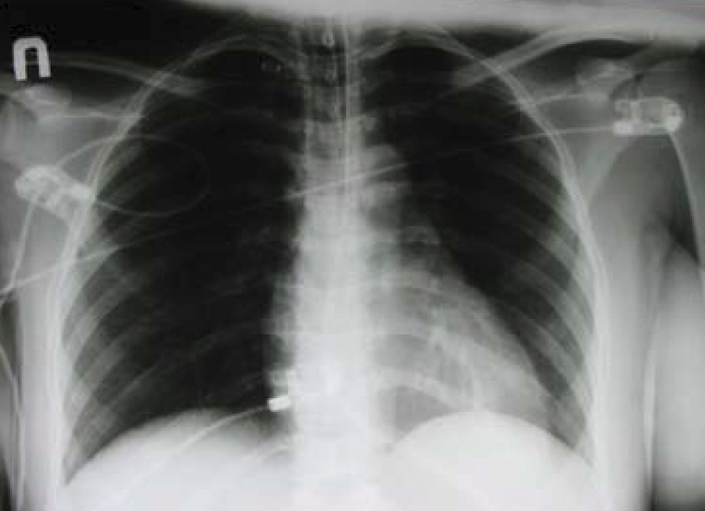

The Calm Before the Storm
Cases of drug-resistant Tuberculosis on the rise
Charmaine Chui
Fall 2007

In developed countries, we tend to think of tuberculosis (TB) as a
vanquished foe, a medical relic no longer clinically relevant; yet in
the time it took to read this sentence, at least one more person has
acquired a TB infection. Looking past the disparities in health care
implied by such a supposition, one sees that in some areas of San
Francisco, California, the rates of TB are four times as high as the
national rate and almost as high as those in sub-Saharan Africa.
Frighteningly, “super- bugs,” such as extensively drug resistant TB
(XDR-TB) strains, seem to be on the rise even in industrialized
countries.
TB is an infectious disease caused by Mycobacterium
tuberculosis. Symptoms include loss of weight and energy, poor
appetite, fever, persistent cough, night sweats, and eventual
degradation of lung tissue. Although pulmonary TB is the most common
clinical manifestation, TB can affect the central nervous system,
lymphatic system, circulatory system, genitourinary system,
skeletomuscular system, and even the skin. However, not all infected
individuals display symptoms. In fact, 90 percent of those infected
have a latent tuberculosis infection (LTBI). People with LTBI test
positive for the bacteria but do not suffer from any symptoms. Luckily,
only symptomatic individuals can spread TB, but patients may remain
undiagnosed until the disease is quite advanced. Thus, being in a
location of high TB density increases one’s risk of infection. Other
risk factors for TB include low socioeconomic status, alcoholism,
immigration from a country highly wrought with the disease, and
professions in healthcare.
Undeniably, TB is an international pandemic with
nearly two billion people—one third of the world’s population— infected
with the causative bacilli. Although it is curable, TB continues to
kill more than five thousand people daily worldwide. While these
commonly seen third-world statistics are alarming in and of themselves,
this malady is also on the rise in the developed world. In fact,
in industrialized countries such as the United States, the steady drop
in TB incidence began to plateau in the mid-1980s, and as soon as
funding was withdrawn from prevention efforts, incidence rates
increased.
While part of this rise can be attributed to a high
rate of immigration from countries with high incidences of TB, perhaps
the most serious factor contributing to the resurgence of this illness
is the emergence of multi-drug-resistant strains. Of course, drug
resistance is not unique to TB. Often, drug resistance arises
from random mutations coupled with abuse of antibiotics. Mutant
bacteria are normally in the minority in the infecting population
because their resistance to an antibiotic does not give them any
obvious advantage in growth with respect to the other bacteria.
TB patients are generally treated with the recommended four drug
regimen of isoniazid, rifampin, pyrazinamide, and ethambutol or
streptomycin. If only one antibiotic is administered, this
mutated bacteria population will now be able to out-compete the other
bacteria for survival and will grow exponentially until the treatment
becomes ineffective.
Given this preventive measure, how does
drug-resistant TB arise? Primary resistance occurs in persons who are
infected with a resistant strain of TB, while secondary, acquired
resistance arises during TB therapy because of inadequate treatment,
not taking the prescribed regimen appropriately, or using low- quality
medication. A recent study in Shanghai by the Centers of Disease
Control and Prevention (CDC) published in the March issue of the
Journal for Infectious Diseases demonstrated that a majority of drug
resistance during therapy was not due to poor response to the initial
treatment regimen or to an inadequate treatment regimen, but rather to
ongoing transmission of drug-resistant strains of Mycobacterium
tuberculosis.
Even more threatening than the single-drug-resistant
strains are the multidrug-resistant (MDR) and extensively drug-
resistant (XDR) TB strains. Defined as being resistant to at least
isoniazid and rifampin, MDR-TB first emerged as a threat to TB control,
both in the United States and worldwide, in the 1990s. MDR-TB treatment
requires the use of second-line drugs (SLDs) that are less effective,
more toxic, and more costly than first-line isoniazid- and
rifampin-based regimens. Additionally, the regimen takes two years, as
opposed to the original six months.